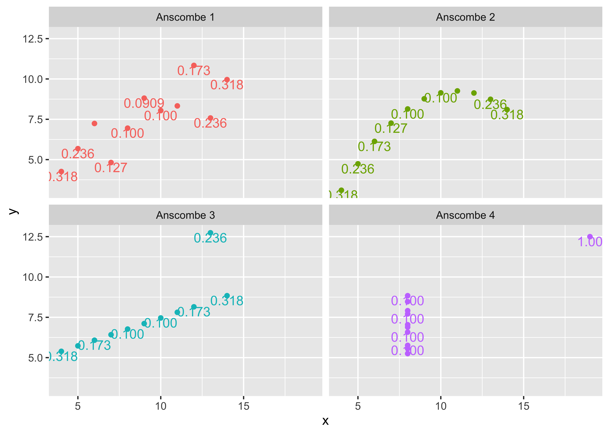
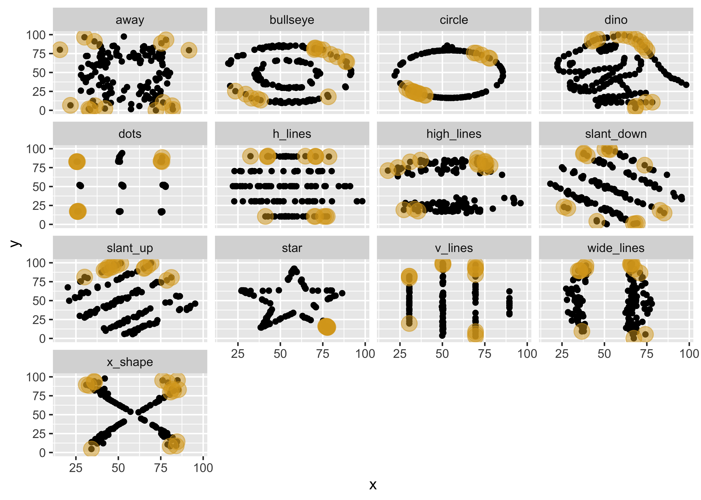

This is a guest post from Gina Reynolds with contributions from 3rd- and 4th-year West Point Math majors Morgan Brown and Madison McGovern. Gina works in data analytics and teaches statistics and probability at West Point. Her work focuses on tools for proximate comparison and translation in data analysis and visualization.
TL;DR
The ggxmean package introduces new geom_*s for fluid visual description of some basic statistical concepts. The ‘titular character’, geom_x_mean, draws a vertical line at the mean of x.
And I had a use case in mind: statistical summaries, especially those used to explain fundamental statistical concepts like covariance, standard deviation, and correlation.
You can visually walk through these concepts, dissecting the equations for their computation at a chalkboard. With ggplot2, you can, of course, get this done as well. I put together that walkthrough here:
But to choreograph this, there was a lot of prep that I needed to do before starting to visualize. I had to calculate the means, standard deviations, etc., all before beginning to plot, and then feed those calculations into existing geom_* functions like geom_vline and geom_segment.
This didn’t feel like the powerful declarative experience that you have a lot of the time using ggplot2. Compare that to the experience that you get with the boxplot. That goes something like this:
I want to know about the pattern in this dataset; okay, so ggplot(data = my_data)
I’m picturing my different categories on the x-axis; alright, mapping = aes(x = my_category)
And I’d like y to represent my continuous variable; great, then mapping = aes(y = my_continuous_outcome)
And I’ll use boxplots to summarize these groupwise distributions; so it’s + geom_boxplot().
Bam! I’ve built my plot and I can see group differences!
In this boxplot example, lots of computation happens in the background for us: min, max, 25%, 75%, median. And that is great. I understand the boxplot well; I don’t need to do those computations myself. I’m happy for ggplot2 to do that for me.
For the covariance/variance/correlation stats walkthroughs, I wanted to have the same declarative experience. I understand the mean well, and one standard deviation away from the mean, etc. I should be able to ask ggplot2 to do that computation for me: to compute the global mean (or a group-wise mean if I’m in the mood for that) and put a vertical line there.
My solution to choreographing the stats visualizations with ‘base ggplot2’ (without using the extension mechanisms) felt inelegant and fragile. It wasn’t very portable (not easy to move to other data – maybe data that my students or I might be more passionate about) or dynamic (I couldn’t easily do group-wise work instead of acting globally). It wasn’t much fun.
Thomas’ talk and the extension system seemed like the answer to bringing ggplot2’s fluid feel to these particular statistical stories.
Using those resources, I managed to write the geom_x_mean() function and friends. And now I’m happy to introduce the ggxmean package!
I’m excited about these functions because I think the syntax mirrors the chalkboard experience: naming concepts one at a time and easily depicting them.
Moreover, ggxmean allows you to do this visual storytelling beyond what you might do on a chalkboard: port the work routine to other datasets that your students find gripping, work with larger data sets (chalkboard work tends to be super small worked examples), and do group-wise computations!
Regarding this last point, in the plot that follows on the palmerpenguins data, ggplot instantly recomputes everything for us by species when we add the faceting declaration! ggplot2 is hard at work in the background, being its awesome self.1
Another set of geoms that ggxmean offers is targeted at another stats intro topic: visualizing discussion of ordinary least squares (OLS) regression. In stats classes across the world, teachers name various statistical concepts as they teach OLS. Again, instructors tend to visualize these with toy datasets on the classroom chalkboard; this is great! ggxmean attempts to isolate some of those concepts and package them into geom_* functions to mirror that chalkboard experience:
Extending the Scope of ggxmean: Student Contributions
The work on OLS was a jumping-off point for the most recent functions to the ggxmean package. Morgan Brown and Madison McGovern, students at West Point, contributed to the package for independent studies in the fall AY2022 term. I’m incredibly excited to show you their work.
Morgan and Madison took up the question of data outliers. Here, we apply their work to famous toy datasets: Anscombe’s quartet and the datasauRus Dozen. With the functions I’d worked on, we can visualize the summary statistics (mean, sds, correlation) that are typically the subject of discussions of Anscombe’s quartet and the datasauRus Dozen. This is shown here:
But Anscombe and datasauRus constellations are pretty special. And looking at statistics describing outlyingness also makes sense. Using Morgan and Madison’s functions on leverage and influence, we can easily highlight outlying observations!
In the following plot, Morgan’s function geom_text_leverage() calculates leverage for each observation:
tidy_anscombe %>%ggplot() +aes(x = x, y = y) +aes(color = group) +geom_point() +facet_wrap(facets =vars(group)) + ggxmean::geom_text_leverage(vjust =1, ## A function Morgan wrote for ggxmean!check_overlap = T) +guides(color ="none")

And in the datasauRus::datasaurus_dozen, Madison’s geom_point_high_cooks() highlights the 10% most influential observations:
datasauRus::datasaurus_dozen %>%ggplot() +aes(x = x, y = y) +geom_point() + ggxmean::geom_point_high_cooks( ## A function Madison wrote for ggxmean!color ="goldenrod",alpha = .5,size =5) +facet_wrap(facets ="dataset")

Using ggxmean
In my day-to-day analytic work, I’m glad to have the ggxmean functions ready to go. The function I use most is, not surprisingly, geom_x_mean() for marking the global and group-wise means! In the classroom, of course, the ggxmean functions are fun to apply to a variety of datasets used in class after a good, old-fashioned chalkboard walkthrough.
The package is not yet on CRAN, so to give it a spin yourself, use:
remotes::install_github("EvaMaeRey/ggxmean")
We’re open to your feedback and contributions on code, computation, and conventions (function names, arguments, etc.)!
Some of these functions aren’t exported because I’m not confident of the names and some other considerations. Consider weighing in on the issues at https://github.com/EvaMaeRey/ggxmean.↩︎